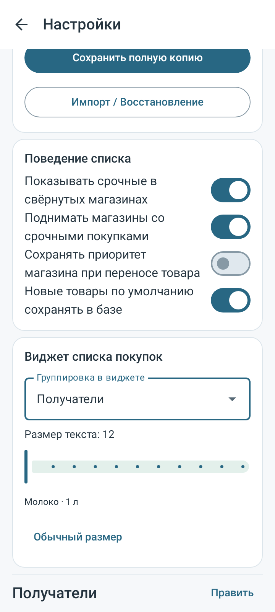
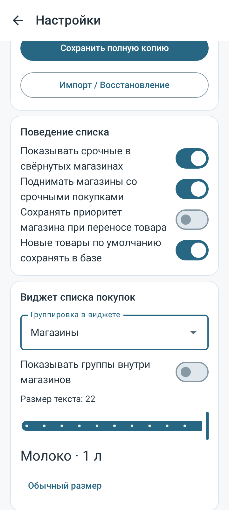
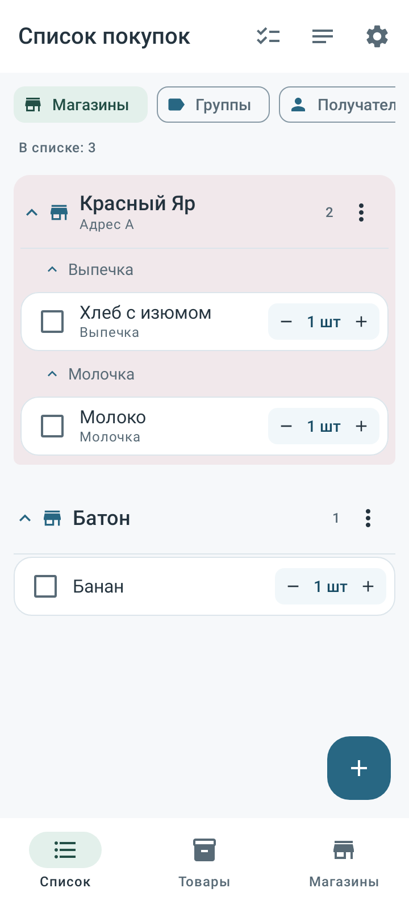
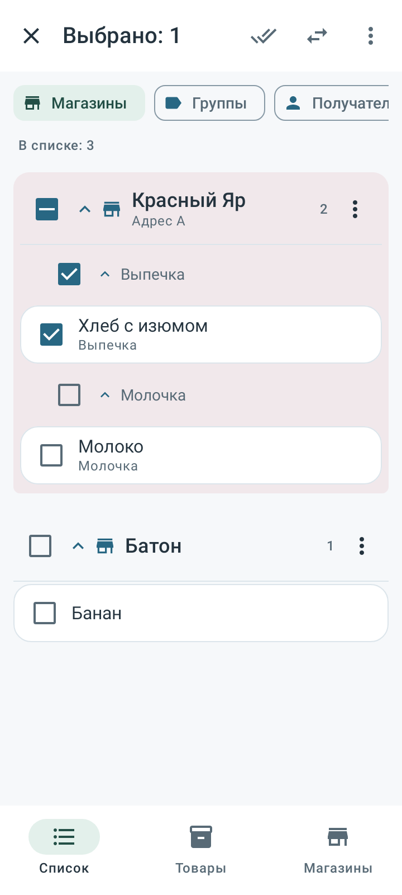
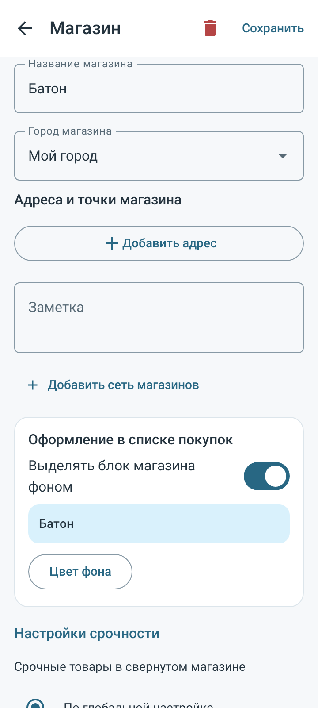
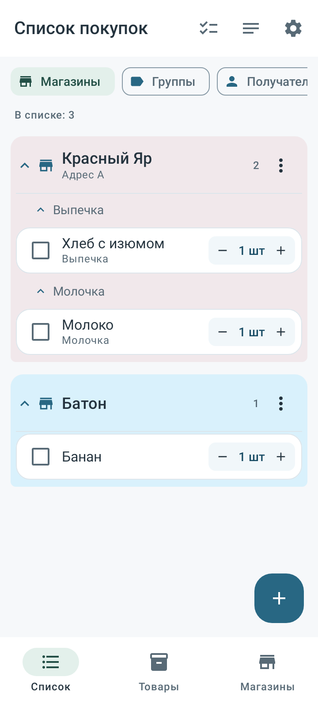
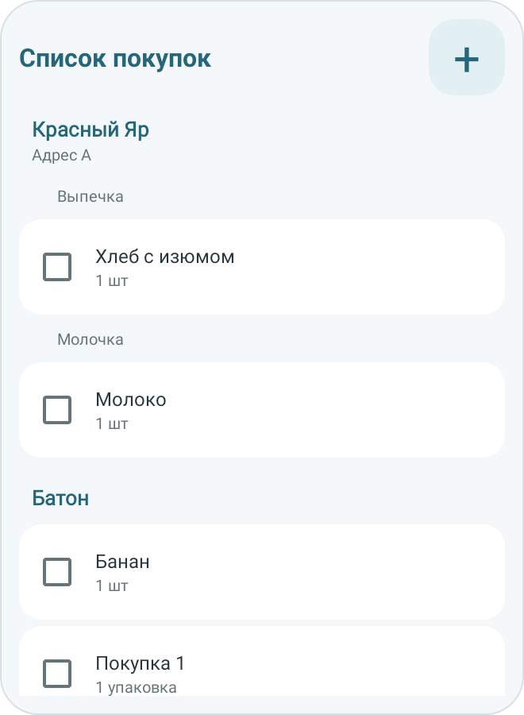
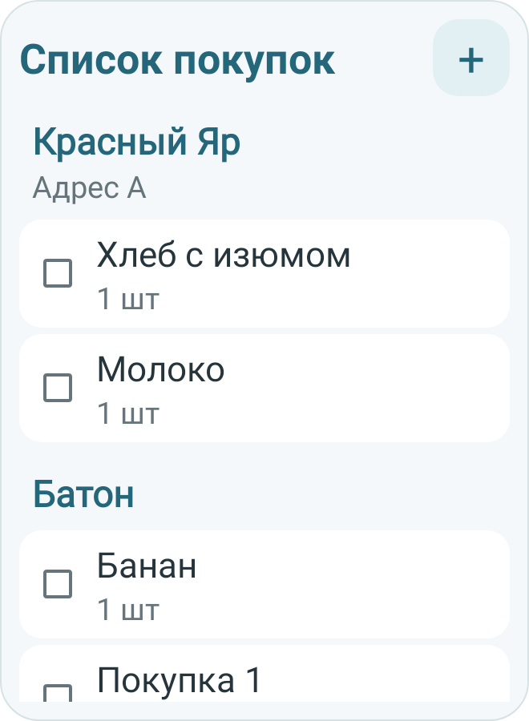

Настройки виджета и ясная иерархия списка покупок · 19 октября2026.
Скачать APK0.13.0(19) · SHA256 · ПроверкиJSON · Исходники · Доказательства
Прежний пакет com.spisokryadom.app.next, прежняя подпись. Android8.0+, Room14/ZIP10. Обновление сохраняет существующую базу через миграцию.
SHA256: 17a658b2a2622e321c9642d45e5c381d0a42e3193c9440db1f438b841bcb02fd
537/537 проверок в55 классах (507 прежних+30 новых),0 failures/errors/skipped. Полный итоговый набор, release и lint: BUILD SUCCESSFUL; lint0 ошибок/118 предупреждений/3 подсказок. APK0.13.0(19), Room14/ZIP10, прежние .next пакет/сертификат и точное русское название проверены. SHA256 17a658b2a2622e321c9642d45e5c381d0a42e3193c9440db1f438b841bcb02fd. Неизменность всех214 source/test/build/schema файлов со старта полного прогона подтверждена.16 nativePNG(API28/35). APK0.12.1 сохранён. Физический телефон/OEM-лаунчер не подключался; GitHub в этой итерации не менялся.
Личные экспорты не преобразуются и не встроены в APK. Настройки виджета и цвет магазина входят в полную резервную копию; прежние копии читаются. Исторические тесты менялись только для новой целевой схемы/версии копии и явного плоского режима прежнего теста виджета.
Изображения ниже — реальная нативная отрисовка Compose/RemoteViews на API28/35 с тестовыми данными. Это не снимки физического OEM-лаунчера. Реальная установка и поведение конкретного телефона/системного масштаба отдельно не проверялись. Изменения локальные; предыдущий GitHub-релиз0.12.1 сохранён.








Проверены обязательные01/08/09/12/13 и профильные02/03/05/06/07/10/11/14/31/34. Обновлены01/02/05/06/07/08/09/11/13/14/README; добавлен35_WIDGET_LAYOUT_130.md. Протокол12 и запреты10 не менялись. Файлы входят в архив исходников.
Из118 предупреждений Lint два новых — рекомендации UseKtx по стилю вызовов SharedPreferences.edit. Ошибок Lint нет.